6. Architetture a tre livelli
6.1. Introduction
Torniamo all'ultima versione dell'applicazione per il calcolo delle imposte:
using System;
namespace Chap3 {
class Program {
static void Main() {
// programma interattivo per il calcolo delle imposte
// l'utente digita tre dati dalla tastiera: coniugato nbEnfants stipendio
// il programma visualizza quindi l’imposta da pagare
...
// creazione di un oggetto IImpot
IImpot impot = null;
try {
// creazione di un oggetto IImpot
impot = new FileImpot("DataImpotInvalide.txt");
} catch (FileImpotException e) {
// visualizzazione dell'errore
...
// arresto del programma
Environment.Exit(1);
}
// ciclo infinito
while (true) {
// vengono richiesti i parametri per il calcolo dell'imposta
Console.Write("Paramètres du calcul de l'Impot au format : Marié (o/n) NbEnfants Salaire ou rien pour arrêter :");
string paramètres = Console.ReadLine().Trim();
...
// i parametri sono corretti - si calcola l'imposta
Console.WriteLine("Impot=" + impot.calculer(marié == "o", nbEnfants, salaire) + " euros");
// contribuente successivo
}//while
}
}
}
La soluzione precedente include operazioni classiche di programmazione:
- il recupero dei dati memorizzati in file, database, ecc. (righe 12-21)
- l'interazione con l'utente, righe 26 (immissioni) e 29 (visualizzazioni)
- l'utilizzo di un algoritmo specifico del settore, riga 29
L'esperienza ha dimostrato che isolare queste diverse operazioni in classi separate migliora la manutenibilità delle applicazioni. L'architettura di un'applicazione strutturata in questo modo è la seguente:
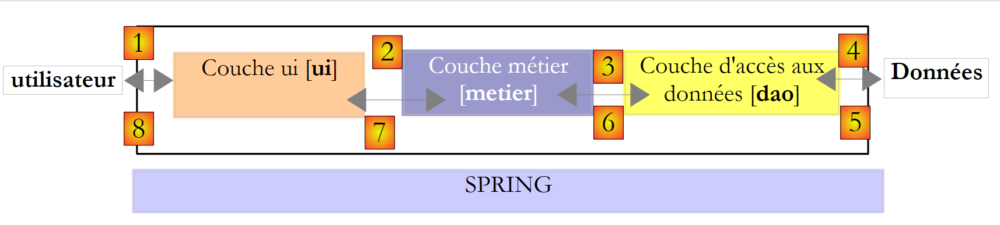 |
Questa architettura è denominata «architettura a tre livelli», traduzione dell’inglese «three-tier architecture». Il termine «tre livelli» indica normalmente un’architettura in cui ogni livello si trova su una macchina diversa. Quando i livelli si trovano sulla stessa macchina, l’architettura diventa un’architettura «a tre strati».
- Il livello [metier] è quello che contiene le regole di business dell’applicazione. Per la nostra applicazione di calcolo delle imposte, si tratta delle regole che consentono di calcolare l’imposta di un contribuente. Questo livello necessita di dati per funzionare:
- le fasce di imposta, dati che cambiano ogni anno
- il numero di figli, lo stato civile e lo stipendio annuale del contribuente
Nello schema sopra riportato, i dati possono provenire da due fonti:
- il livello di accesso ai dati o [dao] (DAO = Data Access Object) per i dati già registrati in file o database. In questo caso potrebbe trattarsi delle fasce di imposta, come avveniva nella versione precedente dell’applicazione.
- il livello di interfaccia utente o [ui] (UI = User Interface) per i dati inseriti dall’utente o visualizzati all’utente. In questo caso potrebbero essere il numero di figli, lo stato civile e lo stipendio annuo del contribuente
- In generale, il livello [dao] si occupa dell’accesso ai dati persistenti (file, database) o non persistenti (rete, sensori, ...).
- Il livello [ui], invece, si occupa delle interazioni con l’utente, se presente.
- I tre livelli sono resi indipendenti grazie all’utilizzo di interfacce.
Riprenderemo l’applicazione [Impots], già studiata più volte, per dotarla di un’architettura a tre livelli. A tal fine, esamineremo i livelli [ui, metier, dao] uno dopo l’altro, iniziando dal livello [dao], che si occupa dei dati persistenti.
Prima di tutto, dobbiamo definire le interfacce dei diversi livelli dell’applicazione [Impots].
6.2. Le interfacce dell’applicazione [Impots]
Ricordiamo che un'interfaccia definisce un insieme di firme di metodi. Le classi che implementano l'interfaccia danno un contenuto a questi metodi.
Torniamo all’architettura a 3 livelli della nostra applicazione:
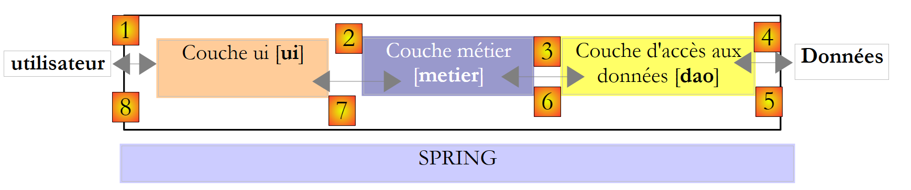 |
In questo tipo di architettura, spesso è l’utente a prendere l’iniziativa. Effettua una richiesta in [1] e riceve una risposta in [8]. Questo processo è denominato ciclo richiesta-risposta. Prendiamo l’esempio del calcolo dell’imposta di un contribuente. Ciò richiederà diverse fasi:
- il livello [ui] dovrà chiedere all’utente il numero di figli, lo stato civile e lo stipendio annuale. Si tratta dell’operazione [1] sopra indicata.
- Una volta fatto ciò, il livello [ui] chiederà al livello business di effettuare il calcolo dell’imposta. A tal fine, gli trasmetterà i dati ricevuti dall’utente. Si tratta dell’operazione [2].
- Il livello [metier] necessita di alcune informazioni per portare a termine il proprio lavoro: le fasce di imposta. Richiederà tali informazioni al livello [dao] tramite il percorso [3, 4, 5, 6]. [3] è la richiesta iniziale e [6] la risposta a tale richiesta.
- Avendo tutti i dati di cui aveva bisogno, il livello [metier] calcola l’imposta.
- Il livello [metier] può ora rispondere alla richiesta del livello [ui] effettuata al punto (b). Si tratta del percorso [7].
- Il livello [ui] formatterà questi risultati e li presenterà all’utente. Si tratta del percorso [8].
- Si potrebbe ipotizzare che l’utente effettui simulazioni fiscali e desideri salvarle. A tal fine utilizzerà il percorso [1-8].
Da questa descrizione si evince che un livello è destinato a utilizzare le risorse del livello che si trova alla sua destra, mai di quello alla sua sinistra. Consideriamo due livelli contigui:
 |
Il livello [A] invia richieste al livello [B]. Nei casi più semplici, un livello è implementato da un'unica classe. Un'applicazione si evolve nel tempo. Pertanto, il livello [B] può avere classi di implementazione diverse, come [B1, B2, ...]. Se il livello [B] è il livello [dao], quest’ultimo può avere una prima implementazione [B1] che recupera i dati da un file. Alcuni anni dopo, si potrebbe voler inserire i dati in un database. Si creerà quindi una seconda classe di implementazione [B2]. Se nell’applicazione iniziale il livello [A] lavorava direttamente con la classe [B1], siamo costretti a riscrivere parzialmente il codice del livello [A]. Supponiamo, ad esempio, di aver scritto nel livello [A] qualcosa del genere:
- riga 1: viene creata un’istanza della classe [B1]
- riga 3: vengono richiesti dei dati a questa istanza
Se supponiamo che la nuova classe di implementazione [B2] utilizzi metodi con la stessa firma di quelli della classe [B1], sarà necessario sostituire tutti i [B1] con [B2]. Questo è il caso più favorevole e piuttosto improbabile se non si è prestata attenzione a queste firme dei metodi. In pratica, capita spesso che le classi [B1] e [B2] non abbiano le stesse firme dei metodi e che, di conseguenza, gran parte del livello [A] debba essere completamente riscritta.
È possibile migliorare la situazione inserendo un’interfaccia tra i livelli [A] e [B]. Ciò significa che si fissano in un'interfaccia le firme dei metodi presentati dal livello [B] al livello [A]. Lo schema precedente diventa quindi il seguente:
 |
Il livello [A] non si rivolge più direttamente al livello [B], ma alla sua interfaccia [IB]. Pertanto, nel codice del livello [A], la classe di implementazione [Bi] del livello [B] compare una sola volta, al momento dell’implementazione dell’interfaccia [IB]. A questo punto, nel codice viene utilizzata l’interfaccia [IB] e non la sua classe di implementazione. Il codice precedente diventa il seguente:
- riga 1: viene creata un'istanza [ib] che implementa l'interfaccia [IB] tramite l'istanziazione della classe [B1]
- riga 3: vengono richiesti dei dati all’istanza [ib]
Ora, se si sostituisce l'implementazione [B1] del livello [B] con un'implementazione [B2], e se entrambe le implementazioni rispettano la stessa interfaccia [IB], allora solo la riga 1 del livello [A] deve essere modificata e nessun'altra. Si tratta di un grande vantaggio che, da solo, giustifica l'uso sistematico delle interfacce tra due livelli.
Si può andare ancora oltre e rendere il livello [A] totalmente indipendente dal livello [B]. Nel codice sopra riportato, la riga 1 pone un problema perché fa riferimento in modo rigido alla classe [B1]. L’ideale sarebbe che il livello [A] potesse disporre di un’implementazione dell’interfaccia [IB] senza dover specificare il nome di una classe. Ciò sarebbe coerente con lo schema sopra riportato. Si nota che il livello [A] si rivolge all’interfaccia [IB] e non si capisce perché dovrebbe conoscere il nome della classe che implementa tale interfaccia. Questo dettaglio non è utile al livello [A].
Il framework Spring (http://www.springframework.org) consente di ottenere questo risultato. L’architettura precedente si evolve come segue:
 |
Il livello trasversale [Spring] consentirà a un livello di ottenere, tramite configurazione, un riferimento al livello situato alla sua destra senza dover conoscere il nome della classe di implementazione di tale livello. Tale nome sarà presente nei file di configurazione e non nel codice C#. Il codice C# dello strato [A] assume quindi la seguente forma:
- riga 1: un'istanza [ib] che implementa l'interfaccia [IB] del livello [B]. Questa istanza viene creata da Spring sulla base delle informazioni presenti in un file di configurazione. Spring si occuperà di creare:
- l'istanza [b] che implementa il livello [B]
- l'istanza [a] che implementa il livello [A]. Questa istanza verrà inizializzata. Il campo [ib] sopra riportato riceverà come valore il riferimento [b] dell’oggetto che implementa il livello [B]
- riga 3: vengono richiesti dati all'istanza [ib]
Si nota ora che la classe di implementazione [B1] del livello B non compare in nessuna parte nel codice del livello [A]. Quando l'implementazione [B1] verrà sostituita da una nuova implementazione [B2], non cambierà nulla nel codice della classe [A]. Basterà semplicemente modificare i file di configurazione di Spring per istanziare [B2] al posto di [B1].
La combinazione di Spring e delle interfacce C# apporta un miglioramento decisivo alla manutenzione delle applicazioni, rendendo i livelli di queste ultime a prova di interferenza tra loro. È questa la soluzione che utilizzeremo per una nuova versione dell’applicazione [Impots].
Torniamo all’architettura a tre livelli della nostra applicazione:
 |
Nei casi più semplici, si può partire dal livello [metier] per individuare le interfacce dell’applicazione. Per funzionare, essa necessita di dati:
- già disponibili in file, database o tramite la rete. Questi dati sono forniti dal livello [dao].
- non ancora disponibili. In tal caso, vengono forniti dal livello [ui], che li ottiene dall’utente dell’applicazione.
Quale interfaccia deve offrire il livello [dao] al livello [metier]? Quali sono le possibili interazioni tra questi due livelli? Il livello [dao] deve fornire i seguenti dati al livello [metier]:
- le fasce di imposta
Nella nostra applicazione, il livello [dao] utilizza dati esistenti ma non ne crea di nuovi. Una definizione dell’interfaccia del livello [dao] potrebbe essere la seguente:
using Entites;
namespace Dao {
public interface IImpotDao {
// le fasce d'imposta
TrancheImpot[] TranchesImpot{get;}
}
}
- riga 3: il livello [dao] verrà inserito nello spazio dei nomi [Dao]
- riga 6: l’interfaccia IImpotDao definisce la proprietà TranchesImpot che fornirà le fasce di imposta al livello [métier].
- riga 1: importa lo spazio dei nomi in cui è definita la struttura TrancheImpot:
namespace Entites {
// una fascia di imposta
public struct TrancheImpot {
public decimal Limite { get; set; }
public decimal CoeffR { get; set; }
public decimal CoeffN { get; set; }
}
}
Torniamo all’architettura a tre livelli della nostra applicazione:
 |
Quale interfaccia deve presentare il livello [metier] al livello [ui]? Ricordiamo le interazioni tra questi due livelli:
- il livello [ui] richiede all’utente il numero di figli, lo stato civile e lo stipendio annuo. Si tratta dell’operazione [1] sopra indicata.
- Una volta fatto ciò, il livello [ui] chiederà al livello business di effettuare il calcolo dei posti a sedere. A tal fine, gli trasmetterà i dati ricevuti dall’utente. Si tratta dell’operazione [2].
Una definizione dell'interfaccia del livello [metier] potrebbe essere la seguente:
namespace Metier {
interface IImpotMetier {
int CalculerImpot(bool marié, int nbEnfants, int salaire);
}
}
- riga 1: inseriremo tutto ciò che riguarda il livello [metier] nello spazio dei nomi [Metier].
- riga 2: l'interfaccia IImpotMetier definisce un solo metodo: quello che consente di calcolare l'imposta di un contribuente in base al suo stato civile, al numero di figli e al suo stipendio annuale.
Esaminiamo una prima implementazione di questa architettura a livelli.
6.3. Applicazione di esempio - versione 4
6.3.1. Il progetto Visual Studio
Il progetto Visual Studio sarà il seguente:
 |
- [1]: la cartella [Entites] contiene gli oggetti trasversali ai livelli [ui, metier, dao]: la struttura TrancheImpot, l'eccezione FileImpotException.
- [2]: la cartella [Dao] contiene le classi e le interfacce del livello [dao]. Utilizzeremo due implementazioni dell’interfaccia IImpotDao: la classe HardwiredImpot esaminata nel paragrafo 4.10 e la classe FileImpot esaminata nel paragrafo 5.8.
- [3]: la cartella [Metier] contiene le classi e le interfacce del livello [metier]
- [4]: la cartella [Ui] contiene le classi del livello [ui]
- [5]: il file [DataImpot.txt] contiene le fasce di imposta utilizzate dall'implementazione FileImpot del livello [dao]. È configurato in modo tale che [6] venga automaticamente copiato nella cartella di esecuzione del progetto.
6.3.2. Le entità dell’applicazione
Torniamo all’architettura a 3 livelli della nostra applicazione:
 |
Chiamiamo entités le classi trasversali ai livelli. Si tratta in genere di classi e strutture che incapsulano i dati del livello [dao]. Queste entità risalgono in genere fino al livello [ui].
Le entità dell’applicazione sono le seguenti:
La struttura TrancheImpot
namespace Entites {
// una fascia di imposta
public struct TrancheImpot {
public decimal Limite { get; set; }
public decimal CoeffR { get; set; }
public decimal CoeffN { get; set; }
}
}
L'eccezione FileImpotException
using System;
namespace Entites {
public class FileImpotException : Exception {
// codici di errore
[Flags]
public enum CodeErreurs { Acces = 1, Ligne = 2, Champ1 = 4, Champ2 = 8, Champ3 = 16 };
// codice di errore
public CodeErreurs Code { get; set; }
// costruttori
public FileImpotException() {
}
public FileImpotException(string message)
: base(message) {
}
public FileImpotException(string message, Exception e)
: base(message, e) {
}
}
}
Nota: la classe FileImpotException è utile solo se il livello [dao] è implementato dalla classe FileImpot.
6.3.3. Il livello [dao]
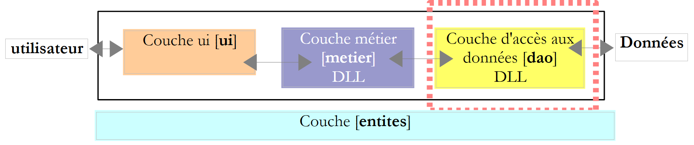 |
Ricordiamo l’interfaccia del livello [dao]:
using Entites;
namespace Dao {
public interface IImpotDao {
// le fasce d'imposta
TrancheImpot[] TranchesImpot{get;}
}
}
Implementeremo questa interfaccia in due modi diversi.
Innanzitutto con la classe HardwiredImpot esaminata nel paragrafo 4.10:
using System;
using Entites;
namespace Dao {
public class HardwiredImpot : IImpotDao {
// tabelle di dati necessarie per il calcolo dell'imposta
decimal[] limites = { 4962M, 8382M, 14753M, 23888M, 38868M, 47932M, 0M };
decimal[] coeffR = { 0M, 0.068M, 0.191M, 0.283M, 0.374M, 0.426M, 0.481M };
decimal[] coeffN = { 0M, 291.09M, 1322.92M, 2668.39M, 4846.98M, 6883.66M, 9505.54M };
// scaglioni fiscali
public TrancheImpot[] TranchesImpot { get; private set; }
// generatore
public HardwiredImpot() {
// creazione della tabella delle fasce di imposta
TranchesImpot = new TrancheImpot[limites.Length];
// compilazione
for (int i = 0; i < TranchesImpot.Length; i++) {
TranchesImpot[i] = new TrancheImpot { Limite = limites[i], CoeffR = coeffR[i], CoeffN = coeffN[i] };
}
}
}// classe
}// spazio dei nomi
- riga 5: la classe HardwiredImpot implementa l'interfaccia IImpotDao
- riga 12: implementazione della proprietà TranchesImpot dell’interfaccia IImpotDao. Questa proprietà è una proprietà automatica. Essa implementa il metodo get della proprietà TranchesImpot dell'interfaccia IImpotDao. È stato inoltre dichiarato un metodo privato set, quindi interno alla classe, affinché il costruttore delle righe 15-22 possa inizializzare l'array delle fasce d'imposta.
Anche l’interfaccia IImpotDao sarà implementata dalla classe FileImpot esaminata nel paragrafo 5.8:
using System;
using System.Collections.Generic;
using System.IO;
using System.Text.RegularExpressions;
using Entites;
namespace Dao {
class FileImpot : IImpotDao {
// file dei dati
public string FileName { get; set; }
// scaglioni fiscali
public TrancheImpot[] TranchesImpot { get; private set; }
// costruttore
public FileImpot(string fileName) {
// si memorizza il nome del file
FileName = fileName;
// dati
List<TrancheImpot> listTranchesImpot = new List<TrancheImpot>();
int numLigne = 1;
// eccezione
FileImpotException fe = null;
// lettura del contenuto del file fileName, riga per riga
Regex pattern = new Regex(@"s*:\s*");
// all'inizio nessun errore
FileImpotException.CodeErreurs code = 0;
try {
using (StreamReader input = new StreamReader(FileName)) {
while (!input.EndOfStream && code == 0) {
// riga corrente
string ligne = input.ReadLine().Trim();
// le righe vuote vengono ignorate
if (ligne == "")
continue;
// riga suddivisa in tre campi separati da:
string[] champsLigne = pattern.Split(ligne);
// ci sono 3 campi?
if (champsLigne.Length != 3) {
code = FileImpotException.CodeErreurs.Ligne;
}
// conversioni dei 3 campi
decimal limite = 0, coeffR = 0, coeffN = 0;
if (code == 0) {
if (!Decimal.TryParse(champsLigne[0], out limite))
code = FileImpotException.CodeErreurs.Champ1;
if (!Decimal.TryParse(champsLigne[1], out coeffR))
code |= FileImpotException.CodeErreurs.Champ2;
if (!Decimal.TryParse(champsLigne[2], out coeffN))
code |= FileImpotException.CodeErreurs.Champ3;
;
}
// errore?
if (code != 0) {
// si registra l'errore
fe = new FileImpotException(String.Format("Ligne n° {0} incorrecte", numLigne)) { Code = code };
} else {
// si memorizza la nuova fascia di imposta
listTranchesImpot.Add(new TrancheImpot() { Limite = limite, CoeffR = coeffR, CoeffN = coeffN });
// riga successiva
numLigne++;
}
}
}
} catch (Exception e) {
// si rileva l'errore
fe = new FileImpotException(String.Format("Erreur lors de la lecture du fichier {0}", FileName), e) { Code = FileImpotException.CodeErreurs.Acces };
}
// errore da segnalare?
if (fe != null) {
// si genera l'eccezione
throw fe;
} else {
// si inserisce l'elenco listImpot nella tabella tranchesImpot
TranchesImpot = listTranchesImpot.ToArray();
}
}
}
}
- questo codice è già stato esaminato nel paragrafo 5.8.
- riga 14: il metodo TranchesImpot dell'interfaccia IImpotDao
- riga 76: inizializzazione delle fasce d'imposta nel costruttore della classe, a partire dal file il cui nome è stato fornito al costruttore alla riga 17.
6.3.4. Lo strato [metier]
 |
Ricordiamo l'interfaccia di questo livello:
namespace Metier {
public interface IImpotMetier {
int CalculerImpot(bool marié, int nbEnfants, int salaire);
}
}
L'implementazione ImpotMetier di questa interfaccia è la seguente:
using Entites;
using Dao;
namespace Metier {
public class ImpotMetier : IImpotMetier {
// livello [dao]
private IImpotDao Dao { get; set; }
// le fasce di imposta
private TrancheImpot[] tranchesImpot;
// costruttore
public ImpotMetier(IImpotDao dao) {
// memorizzazione
Dao = dao;
// scaglioni fiscali
tranchesImpot = dao.TranchesImpot;
}
// calcolo dell'imposta
public int CalculerImpot(bool marié, int nbEnfants, int salaire) {
// calcolo del numero di quote
decimal nbParts;
if (marié)
nbParts = (decimal)nbEnfants / 2 + 2;
else
nbParts = (decimal)nbEnfants / 2 + 1;
if (nbEnfants >= 3)
nbParts += 0.5M;
// calcolo del reddito imponibile e del quoziente familiare
decimal revenu = 0.72M * salaire;
decimal QF = revenu / nbParts;
// calcolo dell'imposta
tranchesImpot[tranchesImpot.Length - 1].Limite = QF + 1;
int i = 0;
while (QF > tranchesImpot[i].Limite)
i++;
// restituzione del risultato
return (int)(revenu * tranchesImpot[i].CoeffR - nbParts * tranchesImpot[i].CoeffN);
}//calcolare
}//classe
}
- riga 5: la classe [Metier] implementa l'interfaccia [IImpotMetier].
- righe 14-19: il livello [metier] deve collaborare con il livello [dao]. Deve quindi disporre di un riferimento all'oggetto che implementa l'interfaccia IImpotDao. Ecco perché tale riferimento viene passato come parametro al costruttore.
- riga 16: il riferimento al livello [dao] viene memorizzato nel campo privato della riga 8
- riga 18: a partire da questo riferimento, il costruttore richiede la tabella delle fasce di imposta e ne memorizza un riferimento nella proprietà privata della riga 8.
- righe 22-41: implementazione del metodo CalculerImpot dell’interfaccia IImpotMetier. Questa implementazione utilizza la tabella delle fasce d’imposta inizializzata dal costruttore.
6.3.5. Il livello [ui]
 |
Le classi di interazione con l’utente delle versioni 2 e 3 erano molto simili. Quella della versione 2 era la seguente:
using System;
namespace Chap2 {
public class Program {
static void Main() {
...
// creazione di un oggetto IImpot
IImpot impot = new HardwiredImpot();
// ciclo infinito
while (true) {
...
}//while
}
}
}
e quella della versione 3:
using System;
namespace Chap3 {
public class Program {
static void Main() {
...
// creazione di un oggetto IImpot
IImpot impot = null;
try {
// creazione di un oggetto IImpot
impot = new FileImpot("DataImpotInvalide.txt");
} catch (FileImpotException e) {
// visualizzazione errore
string msg = e.InnerException == null ? null : String.Format(", Exception d'origine : {0}", e.InnerException.Message);
Console.WriteLine("L'erreur suivante s'est produite : [Code={0},Message={1}{2}]", e.Code, e.Message, msg == null ? "" : msg);
// arresto del programma
Environment.Exit(1);
}
// ciclo infinito
while (true) {
...
}//while
}
}
}
Cambia solo il modo in cui viene istanziato l’oggetto di tipo IImpot che consente il calcolo dell’imposta. Questo oggetto corrisponde qui al nostro livello [métier].
Per un'implementazione [dao] con la classe HardwiredImpot, la classe di dialogo è la seguente:
using System;
using Metier;
using Dao;
using Entites;
namespace Ui {
public class Dialogue2 {
static void Main() {
...
// si creano i livelli [metier et dao]
IImpotMetier metier = new ImpotMetier(new HardwiredImpot());
// ciclo infinito
while (true) {
...
// i parametri sono corretti - si calcola l'imposta
Console.WriteLine("Impot=" + metier.CalculerImpot(marié == "o", nbEnfants, salaire) + " euros");
// contribuente successivo
}//while
}
}
}
- riga 12: istanziazione dei livelli [dao] e [metier]. Si ricorda che il livello [metier] necessita del livello [dao].
- riga 18: utilizzo del livello [metier] per il calcolo dell'imposta
Per un'implementazione [dao] con la classe FileImpot, la classe di dialogo è la seguente:
using System;
using Metier;
using Dao;
using Entites;
namespace Ui {
public class Dialogue {
static void Main() {
...
// si creano i livelli [metier et dao]
IImpotMetier metier = null;
try {
// creazione livello [metier]
metier = new ImpotMetier(new FileImpot("DataImpot.txt"));
} catch (FileImpotException e) {
// visualizzazione errore
string msg = e.InnerException == null ? null : String.Format(", Exception d'origine : {0}", e.InnerException.Message);
Console.WriteLine("L'erreur suivante s'est produite : [Code={0},Message={1}{2}]", e.Code, e.Message, msg == null ? "" : msg);
// arresto del programma
Environment.Exit(1);
}
// ciclo infinito
while (true) {
...
// i parametri sono corretti - si calcola l'imposta
Console.WriteLine("Impot=" + metier.CalculerImpot(marié == "o", nbEnfants, salaire) + " euros");
// contribuente successivo
}//while
}
}
}
- righe 11-21: istanziamento dei livelli [dao] e [metier]. Poiché l’istanziamento del livello [dao] può generare un’eccezione, questa viene gestita
- riga 26: utilizzo del livello [metier] per calcolare l’imposta, come nella versione precedente
6.3.6. Conclusione
L'architettura a livelli e l'utilizzo delle interfacce hanno conferito una certa flessibilità alla nostra applicazione. Ciò è particolarmente evidente nel modo in cui il livello [ui] istanzia i livelli [dao] e [métier]:
// si creano i livelli [metier et dao]
IImpotMetier metier = new ImpotMetier(new HardwiredImpot());
in un caso e:
// si creano i livelli [metier et dao]
IImpotMetier metier = null;
try {
// creazione del livello [metier]
metier = new ImpotMetier(new FileImpot("DataImpot.txt"));
} catch (FileImpotException e) {
// visualizzazione errore
string msg = e.InnerException == null ? null : String.Format(", Exception d'origine : {0}", e.InnerException.Message);
Console.WriteLine("L'erreur suivante s'est produite : [Code={0},Message={1}{2}]", e.Code, e.Message, msg == null ? "" : msg);
// arresto del programma
Environment.Exit(1);
}
nell’altro. A parte la gestione dell’eccezione nel caso 2, l’istanziazione dei livelli [dao] e [metier] è simile in entrambe le applicazioni. Una volta istanziati i livelli [dao] e [metier], il codice del livello [ui] è identico in entrambi i casi. Ciò è dovuto al fatto che il livello [métier] viene gestito tramite la sua interfaccia IImpotMetier e non tramite la relativa classe di implementazione. Modificare il livello [metier] o il livello [dao] dell’applicazione senza modificare le relative interfacce comporterà sempre e solo la modifica delle righe precedenti nel livello [ui].
Un altro esempio della flessibilità offerta da questa architettura è l’implementazione del livello [métier]:
using Entites;
using Dao;
namespace Metier {
public class ImpotMetier : IImpotMetier {
// livello [dao]
private IImpotDao Dao { get; set; }
// scaglioni fiscali
private TrancheImpot[] tranchesImpot;
// costruttore
public ImpotMetier(IImpotDao dao) {
// memorizzazione
Dao = dao;
// scaglioni d'imposta
tranchesImpot = dao.TranchesImpot;
}
// calcolo dell'imposta
public int CalculerImpot(bool marié, int nbEnfants, int salaire) {
...
}//calcolare
}//classe
}
Alla riga 14 si vede che il livello [métier] è costruito a partire da un riferimento all’interfaccia del livello [dao]. Modificare l’implementazione di quest’ultimo non ha quindi alcun impatto sul livello [métier]. È per questo motivo che la nostra unica implementazione del livello [métier] ha potuto funzionare senza modifiche con due diverse implementazioni del livello [dao].
6.4. Esempio di applicazione - versione 5
 |
Questa nuova versione riprende quella precedente apportando le seguenti modifiche:
- i livelli [métier] e [dao] sono entrambi incapsulati in un DLL e testati con il framework di test unitari NUnit.
- l'integrazione dei livelli è garantita dal framework Spring
Nei grandi progetti, diversi sviluppatori lavorano allo stesso progetto. Le architetture a livelli facilitano questa modalità di lavoro: poiché i livelli comunicano tra loro tramite interfacce ben definite, uno sviluppatore che lavora su un livello non deve preoccuparsi del lavoro degli altri sviluppatori sugli altri livelli. È sufficiente che tutti rispettino le interfacce.
Nell’esempio sopra riportato, lo sviluppatore del livello [métier] avrà bisogno, al momento dei test del proprio livello, di un’implementazione del livello [dao]. Finché quest’ultima non sarà completata, potrà utilizzare un’implementazione fittizia del livello [dao], purché rispetti l’interfaccia IImpotDao. Questo rappresenta un ulteriore vantaggio dell’architettura a livelli: un ritardo nel livello [dao] non impedisce l’esecuzione dei test del livello [métier]. L’implementazione fittizia del livello [dao] presenta inoltre il vantaggio di essere spesso più semplice da realizzare rispetto al vero livello [dao], che può richiedere l’avvio di un SGBD, connessioni di rete, ecc.
Una volta completato e testato il livello [dao], verrà fornito agli sviluppatori del livello [métier] sotto forma di un DLL anziché come codice sorgente. Alla fine, l'applicazione viene spesso distribuita sotto forma di un eseguibile .exe (quello del livello [ui]) e di librerie di classi .dll (gli altri livelli).
6.4.1. NUnit
I test effettuati finora per le nostre varie applicazioni si basavano su una verifica visiva. Si verificava che sullo schermo si ottenesse ciò che ci si aspettava. Si tratta di un metodo inutilizzabile quando i test da eseguire sono numerosi. L’essere umano è infatti soggetto alla stanchezza e la sua capacità di verificare i test si affievolisce nel corso della giornata. I test devono quindi essere automatizzati e mirare a non richiedere alcun intervento umano.
Un'applicazione si evolve nel tempo. Ad ogni aggiornamento, è necessario verificare che l'applicazione non subisca "regressioni", c.a.d, e che continui a superare i test di funzionamento effettuati al momento della sua scrittura iniziale. Questi test sono chiamati "test di non regressione". Un'applicazione di una certa entità può richiedere centinaia di test. Si testano infatti tutti i metodi di ogni classe dell’applicazione. Si tratta dei cosiddetti test unitari. Questi possono richiedere l’impiego di molti sviluppatori se non sono stati automatizzati.
Sono stati sviluppati strumenti per automatizzare i test. Uno di questi si chiama NUnit. È disponibile sul sito [http://www.nunit.org]:
 |  |
Per questo documento è stata utilizzata la versione 2.4.6 sopra indicata (marzo 2008). L’installazione crea un’icona [1] sul desktop:
 |
Un doppio clic sull'icona [1] avvia l'interfaccia grafica di NUnit [2]. Ciò non contribuisce in alcun modo all’automazione dei test, poiché ci si ritrova nuovamente a dover ricorrere a una verifica visiva: il tester controlla i risultati dei test visualizzati nell’interfaccia grafica. Tuttavia, i test possono essere eseguiti anche tramite strumenti batch e i loro risultati salvati in file XML. È questo il metodo utilizzato dai team di sviluppo: i test vengono avviati di notte e gli sviluppatori ottengono il risultato la mattina seguente.
Esaminiamo con un esempio il principio dei test NUnit. Innanzitutto, creiamo un nuovo progetto C# di tipo Console Application:
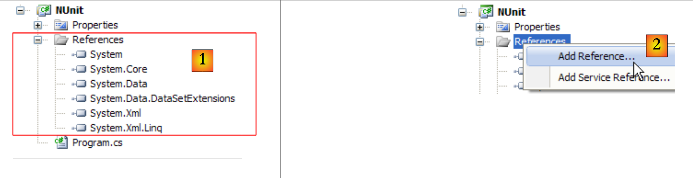 |
In [1] sono visibili i références del progetto. Questi riferimenti sono DLL contenenti classi e interfacce utilizzate dal progetto. Quelle presenti in [1] sono incluse per impostazione predefinita in ogni nuovo progetto C#. Per poter utilizzare le classi e le interfacce del framework NUnit, dobbiamo aggiungere [2] un nuovo riferimento al progetto.
 |
Nella scheda .NET sopra riportata, selezioniamo il componente [nunit.framework]. I componenti [nunit.*] sopra indicati non sono presenti di default nell’ambiente .NET. Sono stati inseriti in seguito alla precedente installazione del framework NUnit. Una volta convalidata l’aggiunta del riferimento, questo appare come [4] nell’elenco dei riferimenti del progetto.
Prima della generazione dell’applicazione, la cartella [bin/Release] del progetto è vuota. Dopo la generazione (F6), si può notare che la cartella [bin/Release] non è più vuota:
 |
In [6] si nota la presenza di DLL e [nunit.framework.dll]. È stata l’aggiunta del riferimento [nunit.framework] a provocare la copia di questo DLL nella cartella di esecuzione. Quest’ultima è infatti una delle cartelle che verranno esplorate da CLR (Common Language Runtime) .NET per individuare le classi e le interfacce a cui fa riferimento il progetto.
Creiamo una prima classe di test NUnit. A tal fine, eliminiamo la classe [Program.cs] generata di default, quindi aggiungiamo una nuova classe [Nunit1.cs] al progetto. Eliminiamo inoltre i riferimenti non necessari [7].
La classe di test NUnit1 sarà la seguente:
using System;
using NUnit.Framework;
namespace NUnit {
[TestFixture]
public class NUnit1 {
public NUnit1() {
Console.WriteLine("constructeur");
}
[SetUp]
public void avant() {
Console.WriteLine("Setup");
}
[TearDown]
public void après() {
Console.WriteLine("TearDown");
}
[Test]
public void t1() {
Console.WriteLine("test1");
Assert.AreEqual(1, 1);
}
[Test]
public void t2() {
Console.WriteLine("test2");
Assert.AreEqual(1, 2, "1 n'est pas égal à 2");
}
}
}
- riga 6: la classe NUnit1 deve essere pubblica. La parola chiave public non viene generata di default da Visual Studio. È necessario aggiungerla.
- riga 5: l'attributo [TestFixture] è un attributo NUnit. Indica che la classe è una classe di test.
- righe 7-9: il costruttore. Qui viene utilizzato solo per visualizzare un messaggio sullo schermo. Vogliamo vedere quando viene eseguito.
- riga 10: l'attributo [SetUp] definisce un metodo eseguito prima di ogni test unitario.
- riga 14: l'attributo [TearDown] definisce un metodo eseguito dopo ogni test unitario.
- riga 18: l’attributo [Test] definisce un metodo di test. Per ogni metodo annotato con l’attributo [Test], il metodo annotato [SetUp] verrà eseguito prima del test e il metodo annotato [TearDown] verrà eseguito dopo il test.
- riga 21: uno dei metodi [Assert.*] definiti dal framework NUnit. Sono disponibili i seguenti metodi [Assert]:
- [Assert.AreEqual(expression1, expression2)]: verifica che i valori delle due espressioni siano uguali. Sono accettati numerosi tipi di espressione (int, string, float, double, decimal, ...). Se le due espressioni non sono uguali, viene generata un'eccezione.
- [Assert.AreEqual(réel1, réel2, delta)]: verifica che due numeri reali siano uguali con una tolleranza pari a delta, ovvero c.a.d abs(reale1-reale2)<=delta. Ad esempio, è possibile scrivere [Assert.AreEqual(réel1, réel2, 1E-6)] per verificare che due valori siano uguali con una tolleranza pari a 10⁻⁶.
- [Assert.AreEqual(expression1, expression2, message)] e [Assert.AreEqual(réel1, réel2, delta, message)] sono varianti che consentono di specificare il messaggio di errore da associare all’eccezione generata quando il metodo [Assert.AreEqual] fallisce.
- [Assert.IsNotNull(object)] e [Assert.IsNotNull(object, message)]: verificano che object non sia uguale a null.
- [Assert.IsNull(object)] e [Assert.IsNull(object, message)]: verificano che object sia uguale a null.
- [Assert.IsTrue(expression)] e [Assert.IsTrue(expression, message)]: verifica che l'espressione sia vera.
- [Assert.IsFalse(expression)] e [Assert.IsFalse(expression, message)]: verifica che l'espressione sia uguale a false.
- [Assert.AreSame(object1, object2)] e [Assert.AreSame(object1, object2, message)]: verifica che i riferimenti object1 e object2 indichino lo stesso oggetto.
- [Assert.AreNotSame(object1, object2)] e [Assert.AreNotSame(object1, object2, message)]: verifica che i riferimenti object1 e object2 non indichino lo stesso oggetto.
- riga 21: l'asserzione deve avere esito positivo
- riga 26: l'asserzione deve fallire
Configuriamo il progetto in modo che la sua generazione produca un file DLL anziché un eseguibile .exe:
 |
- in [1]: proprietà del progetto
- in [2, 3]: come tipo di progetto, si sceglie [Class Library] (Libreria di classi)
- in [4]: la generazione del progetto produrrà un DLL (assembly) denominato [Nunit.dll]
Utilizziamo ora NUnit per eseguire la classe di test:
 |
- in [1]: apertura di un progetto NUnit
- in [2, 3]: si carica il file DLL bin/Release/Nunit.dll generato dal progetto C#
- in [4]: il file DLL è stato caricato
- in [5]: l'albero dei test
- in [6]: vengono eseguiti
 |
- in [7]: i risultati: t1 ha superato il test, t2 non l'ha superato
- in [8]: una barra rossa indica il fallimento complessivo della classe di test
- in [9]: il messaggio di errore relativo al test fallito
 |
- in [11]: le diverse schede della finestra dei risultati
- in [12]: la scheda [Console.Out]. Qui si può vedere che:
- il costruttore è stato eseguito una sola volta
- il metodo [SetUp] è stato eseguito prima di ciascuno dei due test
- il metodo [TearDown] è stato eseguito dopo ciascuno dei due test
È possibile specificare i metodi da testare:
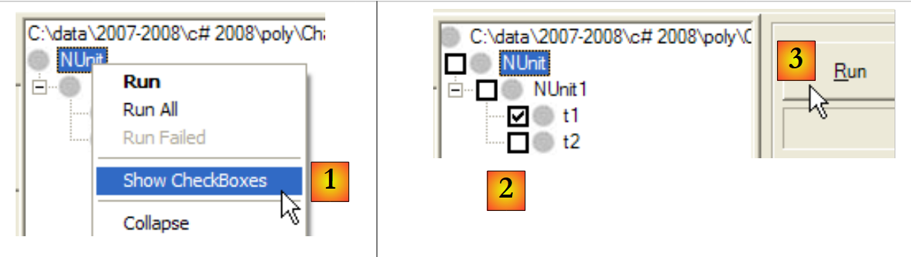 |
- in [1]: si richiede la visualizzazione di una casella di controllo accanto a ciascun test
- in [2]: si selezionano i test da eseguire
- in [3]: li si esegue
Per correggere gli errori, è sufficiente correggere il progetto C# e rigenerarlo. NUnit rileva che il file DLL che sta testando è stato modificato e carica automaticamente la nuova versione. A questo punto è sufficiente rieseguire i test.
Consideriamo la seguente nuova classe di test:
using System;
using NUnit.Framework;
namespace NUnit {
[TestFixture]
public class NUnit2 : AssertionHelper {
public NUnit2() {
Console.WriteLine("constructeur");
}
[SetUp]
public void avant() {
Console.WriteLine("Setup");
}
[TearDown]
public void après() {
Console.WriteLine("TearDown");
}
[Test]
public void t1() {
Console.WriteLine("test1");
Expect(1, EqualTo(1));
}
[Test]
public void t2() {
Console.WriteLine("test2");
Expect(1, EqualTo(2), "1 n'est pas égal à 2");
}
}
}
A partire dalla versione 2.4 di NUnit, è disponibile una nuova sintassi, quella delle righe 21 e 26. Per questo motivo, la classe di test deve derivare dalla classe AssertionHelper (riga 6).
La corrispondenza (non esaustiva) tra la vecchia e la nuova sintassi è la seguente:
Aggiungiamo il seguente test alla classe NUnit2:
[Test]
public void t3() {
bool vrai = true, faux = false;
Expect(vrai, True);
Expect(faux, False);
Object obj1 = new Object(), obj2 = null, obj3=obj1;
Expect(obj1, Not.Null);
Expect(obj2, Null);
Expect(obj3, SameAs(obj1));
double d1 = 4.1, d2 = 6.4, d3 = d1;
Expect(d1, EqualTo(d3).Within(1e-6));
Expect(d1, Not.EqualTo(d2));
}
Se si genera (F6) il nuovo DLL dal progetto C#, il progetto NUnit diventa il seguente:
 |
- in [1]: la nuova classe di test [NUnit2] è stata rilevata automaticamente
- in [2]: si esegue il test t3 di NUnit2
- in [3]: il test t3 è stato superato
Per approfondire NUnit, si rimanda alla guida di NUnit:
 |  |
6.4.2. La soluzione Visual Studio
 |
Costruiremo gradualmente la seguente soluzione Visual Studio:
 |
- in [1]: la soluzione ImpotsV5 è composta da tre progetti, uno per ciascuno dei tre livelli dell'applicazione
- in [2]: il progetto [dao] del livello [dao]
- in [3]: il progetto [metier] del livello [metier]
- in [4]: il progetto [ui] del livello [ui]
La soluzione ImpotsV5 può essere costruita nel modo seguente:
1  | 234  | 5 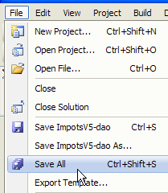 |
- in [1]: creare un nuovo progetto
- in [2]: scegliere un'applicazione console
- in [3]: richiamare il progetto [dao]
- in [4]: creare il progetto
- in [5]: una volta creato il progetto, salvarlo
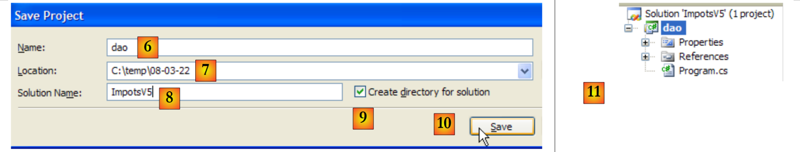 |
- in [6]: mantenere il nome [dao] per il progetto
- in [7]: specificare una cartella in cui salvare il progetto e la relativa soluzione
- in [8]: assegnare un nome alla soluzione
- in [9]: specificare che la soluzione deve avere una propria cartella
- in [10]: salvare il progetto e la relativa soluzione
- in [11]: il progetto [dao] nella sua soluzione ImpotsV5
 |
- in [12]: la cartella della soluzione ImpotsV5. Contiene la cartella [dao] della cartella [dao].
- in [13]: il contenuto della cartella [dao]
- in [14]: si aggiunge un nuovo progetto alla soluzione ImpotsV5
 |
- in [15]: il nuovo progetto si chiama [metier]
- in [16]: la soluzione con i suoi due progetti
- in [17]: la soluzione, una volta aggiunto il terzo progetto [ui]
 |
- in [18]: la cartella della soluzione e le cartelle dei tre progetti
- quando si esegue una soluzione tramite (Ctrl+F5), viene eseguito il progetto attivo. Lo stesso vale quando si genera (F6) la soluzione. Il nome del progetto attivo è in grassetto [19] nella soluzione.
- in [20]: per cambiare il progetto attivo della soluzione
- in [21]: il progetto [metier] è ora il progetto attivo della soluzione
6.4.3. Il livello [dao]
 |
 |
I riferimenti del progetto (cfr. [1] nel progetto)
Si aggiunge il riferimento [nunit.framework] necessario per i test [NUnit]
Le entità (cfr. [2] nel progetto)
La classe [TrancheImpot] è quella delle versioni precedenti. La classe [FileImpotException] della versione precedente viene rinominata in [ImpotException] per renderla più generica e non collegarla a un livello [dao] specifico:
using System;
namespace Entites {
public class ImpotException : Exception {
// codice di errore
public int Code { get; set; }
// costruttori
public ImpotException() {
}
public ImpotException(string message)
: base(message) {
}
public ImpotException(string message, Exception e)
: base(message, e) {
}
}
}
Il livello [dao] (cfr. [3] nel progetto)
L'interfaccia [IImpotDao] è quella della versione precedente. Lo stesso vale per la classe [HardwiredImpot]. La classe [FileImpot] viene aggiornata per tenere conto della modifica dell'eccezione da [FileImpotException] a [ImpotException]:
...
namespace Dao {
public class FileImpot : IImpotDao {
// codici di errore
[Flags]
public enum CodeErreurs { Acces = 1, Ligne = 2, Champ1 = 4, Champ2 = 8, Champ3 = 16 };
...
// costruttore
public FileImpot(string fileName) {
// si memorizza il nome del file
FileName = fileName;
...
// all'inizio nessun errore
CodeErreurs code = 0;
try {
using (StreamReader input = new StreamReader(FileName)) {
while (!input.EndOfStream && code == 0) {
...
// errore?
if (code != 0) {
// si registra l'errore
fe = new ImpotException(String.Format("Ligne n° {0} incorrecte", numLigne)) { Code = (int)code };
} else {
...
}
}
}
} catch (Exception e) {
// si annota l'errore
fe = new ImpotException(String.Format("Erreur lors de la lecture du fichier {0}", FileName), e) { Code = (int)CodeErreurs.Acces };
}
// errore da segnalare?
...
}
}
}
- riga 8: i codici di errore precedentemente presenti nella classe [FileImpotException] sono stati spostati nella classe [FileImpot]. Si tratta infatti di codici di errore specifici di questa implementazione dell’interfaccia [IImpotDao].
- righe 26 e 34: per incapsulare un errore, viene utilizzata la classe [ImpotException] e non più la classe [FileImpotException].
Il test [Test1] (cfr. [4] nel progetto)
La classe [Test1] si limita a visualizzare le fasce di imposta sullo schermo:
using System;
using Dao;
using Entites;
namespace Tests {
class Test1 {
static void Main() {
// si crea il livello [dao]
IImpotDao dao = null;
try {
// creazione del livello [dao]
dao = new FileImpot("DataImpot.txt");
} catch (ImpotException e) {
// visualizzazione errore
string msg = e.InnerException == null ? null : String.Format(", Exception d'origine : {0}", e.InnerException.Message);
Console.WriteLine("L'erreur suivante s'est produite : [Code={0},Message={1}{2}]", e.Code, e.Message, msg == null ? "" : msg);
// arresto del programma
Environment.Exit(1);
}
// vengono visualizzate le fasce di imposta
TrancheImpot[] tranchesImpot = dao.TranchesImpot;
foreach (TrancheImpot t in tranchesImpot) {
Console.WriteLine("{0}:{1}:{2}", t.Limite, t.CoeffR, t.CoeffN);
}
}
}
}
- riga 13: il livello [dao] è implementato dalla classe [FileImpot]
- riga 14: si gestisce l’eccezione di tipo [ImpotException] che potrebbe verificarsi.
Il file [DataImpot.txt] necessario per i test viene copiato automaticamente nella cartella di esecuzione del progetto (cfr. [5] nel progetto). Il progetto [dao] conterrà diverse classi che includono un metodo [Main]. È quindi necessario specificare esplicitamente la classe da eseguire quando l’utente richiede l’esecuzione del progetto tramite Ctrl-F5:
 |
- in [1]: accedere alle proprietà del progetto
- in [2]: specificare che si tratta di un'applicazione da console
- in [3]: specificare la classe da eseguire
L'esecuzione della classe precedente [Test1] fornisce i seguenti risultati:
4962:0:0
8382:0,068:291,09
14753:0,191:1322,92
23888:0,283:2668,39
38868:0,374:4846,98
47932:0,426:6883,66
0:0,481:9505,54
Il test [Test2] (cfr. [4] nel progetto)
La classe [Test2] svolge la stessa funzione della classe [Test1], implementando il livello [dao] con la classe [HardwiredImpot]. La riga 13 di [Test1] viene sostituita dalla seguente:
dao = new HardwiredImpot();
Il progetto viene modificato in modo da eseguire ora la classe [Test2]:
 |
I risultati sullo schermo sono gli stessi di prima.
Il test NUnit [NUnit1] (cfr. [4] nel progetto)
Il test unitario [NUnit1] è il seguente:
using System;
using Dao;
using Entites;
using NUnit.Framework;
namespace Tests {
[TestFixture]
public class NUnit1 : AssertionHelper{
// livello [dao] da testare
private IImpotDao dao;
// costruttore
public NUnit1() {
// inizializzazione del livello [dao]
dao = new FileImpot("DataImpot.txt");
}
// test
[Test]
public void ShowTranchesImpot(){
// vengono visualizzate le fasce di imposta
TrancheImpot[] tranchesImpot = dao.TranchesImpot;
foreach (TrancheImpot t in tranchesImpot) {
Console.WriteLine("{0}:{1}:{2}", t.Limite, t.CoeffR, t.CoeffN);
}
// alcuni test
Expect(tranchesImpot.Length,EqualTo(7));
Expect(tranchesImpot[2].Limite,EqualTo(14753));
Expect(tranchesImpot[2].CoeffR, EqualTo(0.191));
Expect(tranchesImpot[2].CoeffN, EqualTo(1322.92));
}
}
}
- la classe di test deriva dalla classe [AssertionHelper], il che consente l’utilizzo del metodo statico Expect (righe 27-30).
- riga 10: un riferimento al livello [dao]
- righe 13-16: il costruttore istanzia il livello [dao] con la classe [FileImpot]
- righe 19-20: il metodo di test
- riga 22: si recupera la tabella delle fasce di imposta dal livello [dao]
- righe 23-25: le si visualizzano come in precedenza. Questa visualizzazione non avrebbe ragione di esistere in un vero e proprio test unitario. In questo caso, la visualizzazione ha una funzione didattica.
- riga 27: si verifica che ci siano effettivamente 7 fasce d'imposta
- righe 28-30: si verificano i valori della fascia di imposta n. 2
Per eseguire questo test unitario, il progetto deve essere di tipo [Class Library]:
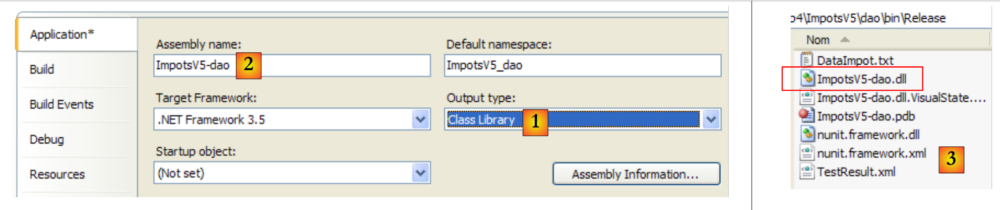 |
- in [1]: la natura del progetto è stata modificata
- in [2]: il DLL generato si chiamerà [ImpotsV5-dao.dll]
- in [3]: dopo la generazione (F6) del progetto, la cartella [dao/bin/Release] contiene il file DLL [ImpotsV5-dao.dll]
Il file DLL [ImpotsV5-dao.dll] viene quindi caricato nel framework NUnit ed eseguito:
 |
- in [1]: i test hanno avuto esito positivo. Consideriamo ora operativo il livello [dao]. Il suo DLL contiene tutte le classi del progetto, comprese quelle di test. Queste ultime sono superflue. Ricostruiamo il livello DLL per escluderne le classi di test.
- in [2]: la cartella [tests] viene esclusa dal progetto
- in [3]: il nuovo progetto. Questo viene rigenerato da F6 per generare un nuovo DLL.
6.4.4. Il livello [metier]
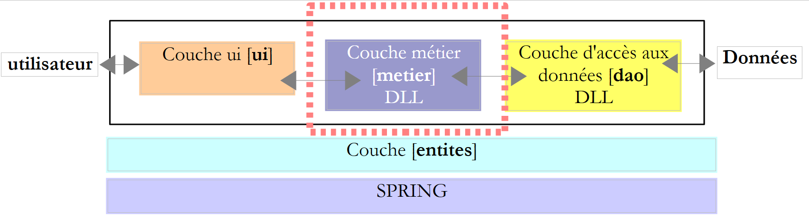 |
 |
- in [1], il progetto [metier] è diventato il progetto attivo della soluzione
- in [2]: i riferimenti del progetto
- in [3]: il livello [metier]
- in [4]: le classi di test
- in [5]: il file [DataImpot.txt] delle fasce di imposta configurato in [6] per essere copiato automaticamente nella cartella di esecuzione del progetto [7]
I riferimenti del progetto (cfr. [2] nel progetto)
Come per il progetto [dao], si aggiunge il riferimento [nunit.framework] necessario per i test [NUnit]. Il livello [metier] necessita del livello [dao]. È quindi necessario un riferimento al livello DLL di questo livello. Si procede come segue:
 |
- in [1]: si aggiunge un nuovo riferimento ai riferimenti del progetto [metier]
- in [2]: si seleziona la scheda [Browse]
- in [3]: si seleziona la cartella [dao/bin/Release]
- in [4]: selezionare DLL e [ImpotsV5-dao.dll] generati nel progetto [dao]
- in [5]: il nuovo riferimento
Il livello [metier] (cfr. [3] nel progetto)
L'interfaccia [IImpotMetier] è quella della versione precedente. Lo stesso vale per la classe [ImpotMetier].
Il test [Test1] (cfr. [4] nel progetto)
La classe [Test1] si limita a eseguire alcuni calcoli relativi alla retribuzione:
using System;
using Dao;
using Entites;
using Metier;
namespace Tests {
class Test1 {
static void Main() {
// si crea il livello [metier]
IImpotMetier metier = null;
try {
// creazione del livello [metier]
metier = new ImpotMetier(new FileImpot("DataImpot.txt"));
} catch (ImpotException e) {
// visualizzazione errore
string msg = e.InnerException == null ? null : String.Format(", Exception d'origine : {0}", e.InnerException.Message);
Console.WriteLine("L'erreur suivante s'est produite : [Code={0},Message={1}{2}]", e.Code, e.Message, msg == null ? "" : msg);
// arresto del programma
Environment.Exit(1);
}
// si calcolano alcune imposte
Console.WriteLine(String.Format("Impot(true,2,60000)={0} euros", metier.CalculerImpot(true, 2, 60000)));
Console.WriteLine(String.Format("Impot(false,3,60000)={0} euros", metier.CalculerImpot(false, 3, 60000)));
Console.WriteLine(String.Format("Impot(false,3,60000)={0} euros", metier.CalculerImpot(false, 3, 6000)));
Console.WriteLine(String.Format("Impot(false,3,60000)={0} euros", metier.CalculerImpot(false, 3, 600000)));
}
}
}
- riga 14: creazione dei livelli [metier] e [dao]. Il livello [dao] è implementato con la classe [FileImpot]
- righe 12-21: gestione di un'eventuale eccezione di tipo [ImpotException]
- righe 23-26: chiamate ripetute dell'unico metodo CalculerImpot dell'interfaccia [IImpotMetier].
Il progetto [metier] è configurato come segue:
 |
- [1]: il progetto è di tipo applicazione console
- [2]: la classe eseguita è la classe [Test1]
- [3]: la generazione del progetto produrrà l'eseguibile [ImpotsV5-metier.exe]
L'esecuzione del progetto fornisce i seguenti risultati:
Il test [NUnit1] (cfr. [4] nel progetto)
La classe di test unitari [NUnit1] riprende i quattro calcoli precedenti e ne verifica il risultato:
using Dao;
using Metier;
using NUnit.Framework;
namespace Tests {
[TestFixture]
public class NUnit1:AssertionHelper {
// livello [metier] da testare
private IImpotMetier metier;
// produttore
public NUnit1() {
// inizializzazione del livello [metier]
metier = new ImpotMetier(new FileImpot("DataImpot.txt"));
}
// test
[Test]
public void CalculsImpot(){
// visualizzazione delle fasce di imposta
Expect(metier.CalculerImpot(true, 2, 60000), EqualTo(4282));
Expect(metier.CalculerImpot(false, 3, 60000), EqualTo(4282));
Expect(metier.CalculerImpot(false, 3, 6000), EqualTo(0));
Expect(metier.CalculerImpot(false, 3, 600000), EqualTo(179275));
}
}
}
- riga 14: creazione dei livelli [metier] e [dao]. Il livello [dao] è implementato con la classe [FileImpot]
- righe 21-24: chiamate ripetute dell'unico metodo CalculerImpot dell'interfaccia [IImpotMetier] con verifica dei risultati.
Il progetto [metier] è ora configurato come segue:
 |
- [1]: il progetto è di tipo «libreria di classi»
- [2]: la generazione del progetto produrrà il DLL [ImpotsV5-metier.dll]
Il progetto viene generato (F6). Successivamente, il file generato DLL [ImpotsV5-metier.dll] viene caricato in NUnit e testato:
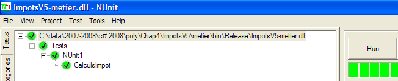 |
Come si vede sopra, i test hanno avuto esito positivo. Consideriamo ora il livello [metier] operativo. Il suo DLL contiene tutte le classi del progetto, comprese quelle di test. Queste ultime non sono necessarie. Ricostruiamo il DLL per escluderne le classi di test.
 |
- in [1]: la cartella [tests] viene esclusa dal progetto
- in [2]: il nuovo progetto. Questo viene rigenerato da F6 per generare un nuovo DLL.
6.4.5. Il livello [ui]
 |
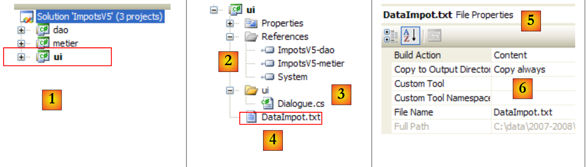 |
- in [1], il progetto [ui] è diventato il progetto attivo della soluzione
- in [2]: i riferimenti del progetto
- in [3]: il livello [ui]
- in [4]: il file [DataImpot.txt] delle fasce d'imposta, configurato in [5] per essere copiato automaticamente nella cartella di esecuzione del progetto [6]
I riferimenti del progetto (cfr. [2] nel progetto)
Il livello [ui] necessita dei livelli [metier] e [dao] per eseguire correttamente i propri calcoli fiscali. È quindi necessario un riferimento ai DLL di questi due livelli. Si procede come illustrato per il livello [metier]
La classe principale [Dialogue.cs] (cfr. [3] nel progetto)
La classe [Dialogue.cs] è quella della versione precedente.
Test
Il progetto [ui] è configurato come segue:
 |
- [1]: il progetto è di tipo «applicazione console»
- [2]: la generazione del progetto produrrà l'eseguibile [ImpotsV5-ui.exe]
- [3]: la classe che verrà eseguita
Un esempio di esecuzione (Ctrl+F5) è il seguente:
Paramètres du calcul de l'Impot au format : Marié (o/n) NbEnfants Salaire ou rien pour arrêter :o 2 60000
Impot=4282 euros
6.4.6. Il livello [Spring]
Torniamo al codice in [Dialogue.cs] che crea i livelli [dao] e [metier]:
// si creano i livelli [metier et dao]
IImpotMetier metier = null;
try {
// creazione livello [metier]
metier = new ImpotMetier(new FileImpot("DataImpot.txt"));
} catch (ImpotException e) {
// visualizzazione errore
...
// arresto del programma
Environment.Exit(1);
}
La riga 5 crea i livelli [dao] e [metier] specificando esplicitamente le classi di implementazione dei due livelli: FileImpot per il livello [dao], ImpotMetier per il livello [metier]. Se l’implementazione di uno dei livelli viene effettuata con una nuova classe, la riga 5 verrà modificata. Ad esempio:
metier = new ImpotMetier(new HardwiredImpot());
A parte questa modifica, nulla cambierà nell’applicazione, poiché ogni strato comunica con quello successivo tramite un’interfaccia. Finché quest’ultima non cambia, non cambia nemmeno la comunicazione tra gli strati. Il framework Spring ci permette di spingerci un po’ oltre nell’indipendenza dei livelli, consentendoci di esternalizzare in un file di configurazione il nome delle classi che implementano i diversi livelli. Modificare l’implementazione di un livello equivale quindi a modificare un file di configurazione. Non vi è alcun impatto sul codice dell’applicazione.
 |
Nell’esempio sopra riportato, il livello [ui] richiederà a Spring diistanziare i livelli [dao], [1], [metier] e [2] in base alle informazioni contenute in un file di configurazione. Il livello [ui] richiederà quindi a Spring [3] un riferimento al livello [metier]:
// si creano i livelli [metier et dao]
IImpotMetier metier = null;
try {
// contesto Spring
IApplicationContext ctx = ContextRegistry.GetContext();
// richiesta di un riferimento sul livello [metier]
metier = (IImpotMetier)ctx.GetObject("metier");
} catch (Exception e1) {
...
}
- riga 5: istanziamento dei livelli [dao] e [metier] da parte di Spring
- riga 7: si recupera un riferimento al livello [metier]. Si noti che il livello [ui] ha ottenuto questo riferimento senza specificare il nome della classe che implementa il livello [metier].
Il framework Spring è disponibile in due versioni: Java e .NET. La versione .NET è disponibile all'URL (marzo 2008) [http://www.springframework.net/]:
 |
- in [1]: il sito di [Spring.net]
- in [2]: la pagina dei download
 |
- in [3]: scarica Spring 1.1 (marzo 2008)
 |
- in [4]: scaricare la versione .exe e installarla
- in [5]: la cartella generata dall'installazione
- in [6]: la cartella [bin/net/2.0/release] contiene i file DLL di Spring per i progetti Visual Studio .NET 2.0 o versioni successive. Spring è un framework molto completo. L'aspetto di Spring che utilizzeremo in questa sede per gestire l'integrazione dei livelli in un'applicazione si chiama IoC: Inversion of Control o anche DI: Dependence Injection. Spring fornisce librerie per l’accesso ai database con NHibernate, la generazione e la gestione di servizi web, applicazioni web, ...
- i DLL necessari per gestire l’integrazione dei livelli in un’applicazione sono i DLL, [7] e [8].
Mettiamo questi tre DLL in una cartella [lib] del nostro progetto:
 |
- [1]: i tre file DLL vengono inseriti nella cartella [lib] tramite Esplora risorse di Windows
- [2]: nel progetto [ui], si visualizzano tutti i file
- [3]: la cartella [ui/lib] è ora visibile. La si include nel progetto
- [4]: la cartella [ui/lib] fa parte del progetto
L'operazione di creazione della cartella [lib] non è affatto indispensabile. I riferimenti potevano essere creati direttamente sulle tre cartelle DLL presenti nella cartella [bin/net/2.0/release] di [Spring.net]. La creazione della cartella [lib] consente tuttavia di sviluppare l'applicazione su una postazione che non dispone di [Spring.net], rendendola così meno dipendente dall'ambiente di sviluppo disponibile.
Aggiungiamo al progetto [ui] i riferimenti alle tre nuove cartelle DLL:
 |
- [1]: si creano riferimenti ai tre DLL presenti nella cartella [lib] [2]
- [3]: i tre DLL fanno parte dei riferimenti del progetto
Torniamo a una panoramica dell'architettura dell'applicazione:
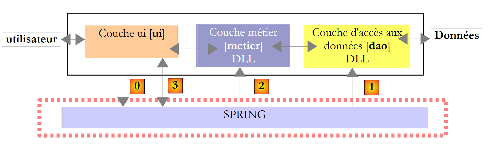 |
Nell’immagine sopra, il livello [ui] richiederà a Spring diistanziare i livelli [dao], [1], [metier] e [2] in base alle informazioni contenute in un file di configurazione. Il livello [ui] richiederà quindi a Spring [3] un riferimento al livello [metier]. Ciò si tradurrà nel livello [ui] con il seguente codice:
// si creano i livelli [metier et dao]
IImpotMetier metier = null;
try {
// contesto Spring
IApplicationContext ctx = ContextRegistry.GetContext();
// si richiede un riferimento al livello [metier]
metier = (IImpotMetier)ctx.GetObject("metier");
} catch (Exception e1) {
...
}
- riga 5: istanziamento dei livelli [dao] e [metier] da parte di Spring
- riga 7: si recupera un riferimento al livello [metier].
La riga [5] sopra riportata utilizza il file di configurazione [App.config] del progetto Visual Studio. In un progetto C#, questo file serve a configurare l'applicazione. [App.config] non è quindi un concetto proprio di Spring, ma un concetto di Visual Studio che Spring utilizza. Spring è in grado di utilizzare altri file di configurazione oltre a [App.config]. La soluzione qui presentata non è quindi l'unica disponibile.
Creiamo il file [App.config] con la procedura guidata di Visual Studio:
 |
- in [1]: aggiunta di un nuovo elemento al progetto
- in [2]: selezionare "Application Configuration File"
- in [3]: [App.config] è il nome predefinito di questo file di configurazione
- in [4]: il file [App.config] è stato aggiunto al progetto
Il contenuto del file [App.config] è il seguente:
<?xml version="1.0" encoding="utf-8" ?>
<configuration>
</configuration>
[App.config] è un file XML. La configurazione del progetto avviene tra i tag <configuration>. La configurazione necessaria per Spring è la seguente:
<?xml version="1.0" encoding="utf-8" ?>
<configuration>
<configSections>
<sectionGroup name="spring">
<section name="context" type="Spring.Context.Support.ContextHandler, Spring.Core" />
<section name="objects" type="Spring.Context.Support.DefaultSectionHandler, Spring.Core" />
</sectionGroup>
</configSections>
<spring>
<context>
<resource uri="config://spring/objects" />
</context>
<objects xmlns="http://www.springframework.net">
<object name="dao" type="Dao.FileImpot, ImpotsV5-dao">
<constructor-arg index="0" value="DataImpot.txt"/>
</object>
<object name="metier" type="Metier.ImpotMetier, ImpotsV5-metier">
<constructor-arg index="0" ref="dao"/>
</object>
</objects>
</spring>
</configuration>
- righe 11-23: la sezione delimitata dal tag <spring> è denominata gruppo di sezioni <spring>. In [App.config] è possibile creare tutti i gruppi di sezioni che si desidera.
- Un gruppo di sezioni contiene delle sezioni: è il caso qui:
- righe 12-14: la sezione <spring/context>
- righe 15-22: la sezione <spring/objects>
- righe 4-9: la regione <configSections> definisce l'elenco degli handler dei gruppi di sezioni presenti in [App.config].
- righe 5-8: definisce l'elenco degli handler delle sezioni del gruppo <spring> (name="spring").
- riga 6: il gestore della sezione <context> del gruppo <spring>:
- name: nome della sezione gestita
- type: nome della classe che gestisce la sezione nella forma NomClasse, NomDLL.
- la sezione <context> del gruppo <spring> è gestita dalla classe [Spring.Context.Support.ContextHandler], che si trova in DLL [Spring.Core.dll]
- riga 7: il gestore della sezione <objects> del gruppo <spring>
Le righe 4-9 sono standard in un file [App.config] con Spring. È sufficiente copiarle da un progetto all’altro.
- righe 12-14: definiscono la sezione <spring/context>.
- riga 13: il tag <resource> serve a indicare dove si trova il file che definisce le classi che Spring deve istanziare. Queste possono trovarsi in [App.config] come in questo caso, ma possono anche trovarsi in un altro file di configurazione. La posizione di queste classi è specificata nell’attributo uri del tag <resource>:
- <resource uri="config://spring/objects"> indica che l'elenco delle classi da istanziare si trova nel file [App.config] (config:), nella sezione //spring/objects, c.a.d, all'interno del tag <objects> del tag <spring>.
- <resource uri="file://spring-config.xml"> indicherebbe che l'elenco delle classi da istanziare si trova nel file [spring-config.xml]. Quest'ultimo dovrebbe essere collocato nelle cartelle di esecuzione (bin/Release o bin/Debug) del progetto. La soluzione più semplice è collocarlo, come è stato fatto per il file [DataImpot.txt], nella directory principale del progetto con la proprietà [Copy to output directory=always].
Le righe 12-14 sono standard in un file [App.config] con Spring. È sufficiente copiarle da un progetto all’altro.
- righe 15-22: definiscono le classi da istanziare. È in questa parte che viene effettuata la configurazione specifica di un’applicazione. Il tag <objects> delimita la sezione di definizione delle classi da istanziare.
- righe 16-18: definiscono la classe da istanziare per il livello [dao]
- riga 16: ogni oggetto istanziato da Spring è racchiuso in un tag <object>. Questo tag ha un attributo name che corrisponde al nome dell’oggetto istanziato. È tramite questo attributo che l’applicazione richiede a Spring un riferimento: «dammi un riferimento all’oggetto chiamato dao». L’attributo type definisce la classe da istanziare nella forma NomClasse, NomDLL. Pertanto, la riga 16 definisce un oggetto denominato “dao”, istanza della classe “Dao.FileImpot” che si trova nel “DLL” “ImpotsV5-dao.dll”. Si noti che viene specificato il nome completo della classe (spazio dei nomi incluso) e che il suffisso .dll non è indicato nel nome della classe.
Una classe può essere istanziata in due modi con Spring:
- tramite un costruttore specifico a cui vengono passati dei parametri: è ciò che avviene nelle righe 16-18.
- tramite il costruttore predefinito senza parametri. L’oggetto viene quindi inizializzato tramite le sue proprietà pubbliche: il tag <object> contiene quindi dei sottotag <property> per inizializzare queste diverse proprietà. In questo caso non abbiamo un esempio.
- (continua)
- riga 16: la classe istanziata è la classe FileImpot. Questa ha il seguente costruttore:
public FileImpot(string fileName);
I parametri del costruttore sono definiti tramite i tag <constructor-arg>.
- riga 17: definisce il primo e unico parametro del costruttore. L’attributo index è il numero del parametro del costruttore, l’attributo value il suo valore: <constructor-arg index="i" value="valuei"/>
- righe 19-21: definiscono la classe da istanziare per il livello [metier]: la classe [Metier.ImpotMetier] che si trova all’interno di DLL [ImpotsV5-metier.dll].
- riga 19: la classe istanziata è la classe ImpotMetier. Questa ha il seguente costruttore:
public ImpotMetier(IImpotDao dao);
- (continua)
- riga 20: definisce il primo e unico parametro del costruttore. Come indicato sopra, il parametro dao del costruttore è un riferimento a un oggetto. In questo caso, nel tag <constructor-arg> si utilizza l’attributo ref al posto dell’attributo value che era stato utilizzato per il livello [dao]: <constructor-arg index="i" ref="refi"/>. Nel costruttore sopra riportato, il parametro dao rappresenta un’istanza sul livello [dao]. Tale istanza è stata definita dalle righe 16-18 del file di configurazione. Pertanto, nella riga 20:
<constructor-arg index="0" ref="dao"/>
ref="dao" rappresenta l’oggetto Spring "dao" definito dalle righe 16-18.
In sintesi, il file [App.config]:
- crea un'istanza del livello [dao] con la classe FileImpot, che riceve come parametro DataImpot.txt (righe 16-18). L'oggetto risultante viene denominato "dao"
- crea un'istanza del livello [metier] con la classe ImpotMetier, che riceve come parametro l'oggetto "dao" precedente (righe 19-21).
Non ci resta che utilizzare questo file di configurazione Spring nel livello [ui]. A tal fine, duplichiamo la classe [Dialogue.cs] in [Dialogue2.cs] e rendiamo quest’ultima la classe principale del progetto [ui]:
 |
- in [1]: copia di [Dialogue.cs]
- in [2]: unione
- in [3]: copia di [Dialogue.cs]
- in [4]: rinominato [Dialogue2.cs]
 |
- in [6]: si imposta [Dialogue2.cs] come classe principale del progetto [ui].
Il seguente codice di [Dialogue.cs]:
// si creano i livelli [metier et dao]
IImpotMetier metier = null;
try {
// creazione del livello [metier]
metier = new ImpotMetier(new FileImpot("DataImpot.txt"));
} catch (ImpotException e) {
// visualizzazione errore
string msg = e.InnerException == null ? null : String.Format(", Exception d'origine : {0}", e.InnerException.Message);
Console.WriteLine("L'erreur suivante s'est produite : [Code={0},Message={1}{2}]", e.Code, e.Message, msg == null ? "" : msg);
// arresto del programma
Environment.Exit(1);
}
// ciclo infinito
while (true) {
...
diventa il seguente in [Dialogue2.cs]:
// si creano i livelli [metier et dao]
IApplicationContext ctx = null;
try {
// contesto Spring
ctx = ContextRegistry.GetContext();
} catch (Exception e1) {
// visualizzazione errore
Console.WriteLine("Chaîne des exceptions : \n{0}", "".PadLeft(40, '-'));
Exception e = e1;
while (e != null) {
Console.WriteLine("{0}: {1}", e.GetType().FullName, e.Message);
Console.WriteLine("".PadLeft(40, '-'));
e = e.InnerException;
}
// arresto del programma
Environment.Exit(1);
}
// si richiede un riferimento al livello [metier]
IImpotMetier metier = (IImpotMetier)ctx.GetObject("metier");
// ciclo infinito
while (true) {
....................................
- riga 2: IApplicationContext consente di accedere a tutti gli oggetti istanziati da Spring. Questo oggetto viene chiamato contesto Spring dell'applicazione o, più semplicemente, contesto dell'applicazione. Per il momento, tale contesto non è stato inizializzato. È il blocco try/catch che segue a occuparsene.
- riga 5: la configurazione di Spring in [App.config] viene letta e utilizzata. Dopo questa operazione, se non si è verificata alcuna eccezione, tutti gli oggetti della sezione <objects> sono stati istanziati:
- l’oggetto Spring “dao” è un’istanza sul livello [dao]
- l’oggetto Spring "metier" è un’istanza nel livello [metier]
- riga 19: la classe [Dialogue2.cs] necessita di un riferimento sul livello [metier]. Tale riferimento viene richiesto al contesto dell’applicazione. L'oggetto IApplicationContext consente di accedere agli oggetti Spring tramite il loro nome (attributo «name» del tag <object> della configurazione Spring). Il riferimento restituito è un riferimento al tipo generico Object. È necessario convertire il riferimento restituito nel tipo corretto, in questo caso il tipo dell’interfaccia del livello [metier]: IImpotMetier.
Se tutto è andato a buon fine, dopo la riga 19, [Dialogue2.cs] ha un riferimento al livello [metier]. Il codice delle righe 21 e successive è quello della classe [Dialogue.cs] già esaminata.
- righe 6-17: gestione dell’eccezione che si verifica quando l’elaborazione del file di configurazione di Spring non può essere portata a termine. Ciò può essere dovuto a diverse ragioni: sintassi errata del file di configurazione stesso oppure impossibilità di istanziare uno degli oggetti configurati. Nel nostro esempio, quest’ultimo caso si verificherebbe se il file DataImpot.txt della riga 17 di [App.config] non fosse presente nella cartella di esecuzione del progetto.
L'eccezione che viene segnalata alla riga 6 fa parte di una catena di eccezioni in cui ogni eccezione presenta due proprietà:
- Messaggio: il messaggio di errore associato all’eccezione
- InnerException: l’eccezione precedente nella catena di eccezioni
Il ciclo delle righe 10-14 visualizza tutte le eccezioni della catena nella forma: classe dell’eccezione e messaggio associato.
Quando si esegue il progetto [ui] con un file di configurazione valido, si ottengono i risultati consueti:
Paramètres du calcul de l'Impot au format : Marié (o/n) NbEnfants Salaire ou rien pour arrêter :o 2 60000
Impot=4282 euros
Quando si esegue il progetto [ui] con un file [DataImpotInexistant.txt] inesistente,
<object name="dao" type="Dao.FileImpot, ImpotsV5-dao">
<constructor-arg index="0" value="DataImpotInexistant.txt"/>
</object>
si ottengono i seguenti risultati:
- riga 17: l'eccezione originale di tipo [FileNotFoundException]
- riga 15: il livello [dao] incapsula questa eccezione in un tipo [Entites.ImpotException]
- riga 9: l'eccezione generata da Spring poiché non è riuscito a istanziare l'oggetto denominato "dao". Nel processo di creazione di questo oggetto, si sono verificate in precedenza altre due eccezioni: quelle delle righe 11 e 13.
- Poiché non è stato possibile creare l’oggetto “dao”, non è stato possibile creare il contesto dell’applicazione. Questo è il significato dell’eccezione alla riga 5. In precedenza si era verificata un’altra eccezione, quella alla riga 7.
- Riga 3: l’eccezione di livello più alto, l’ultima della catena: viene segnalato un errore di configurazione.
Da tutto ciò si ricava che è l’eccezione più profonda, in questo caso quella della riga 17, a essere spesso la più significativa. Si noti tuttavia che Spring ha conservato il messaggio di errore della riga 17 per trasmetterlo all’eccezione di livello superiore della riga 3, in modo da individuare la causa originaria dell’errore al livello più alto.
Spring meriterebbe un libro a sé stante. Qui abbiamo solo sfiorato l’argomento. È possibile approfondirlo con il documento [spring-net-reference.pdf], che si trova nella cartella di installazione di Spring:
 |
Si può leggere anche [http://tahe.developpez.com/dotnet/springioc], un tutorial su Spring presentato in un contesto VB.NET.